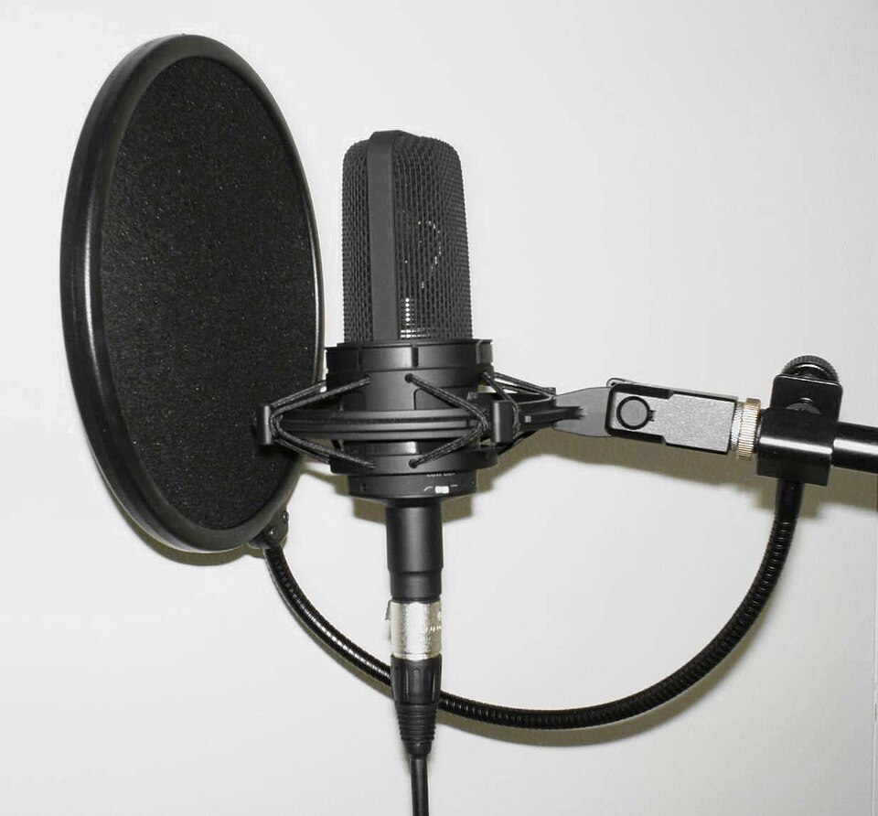
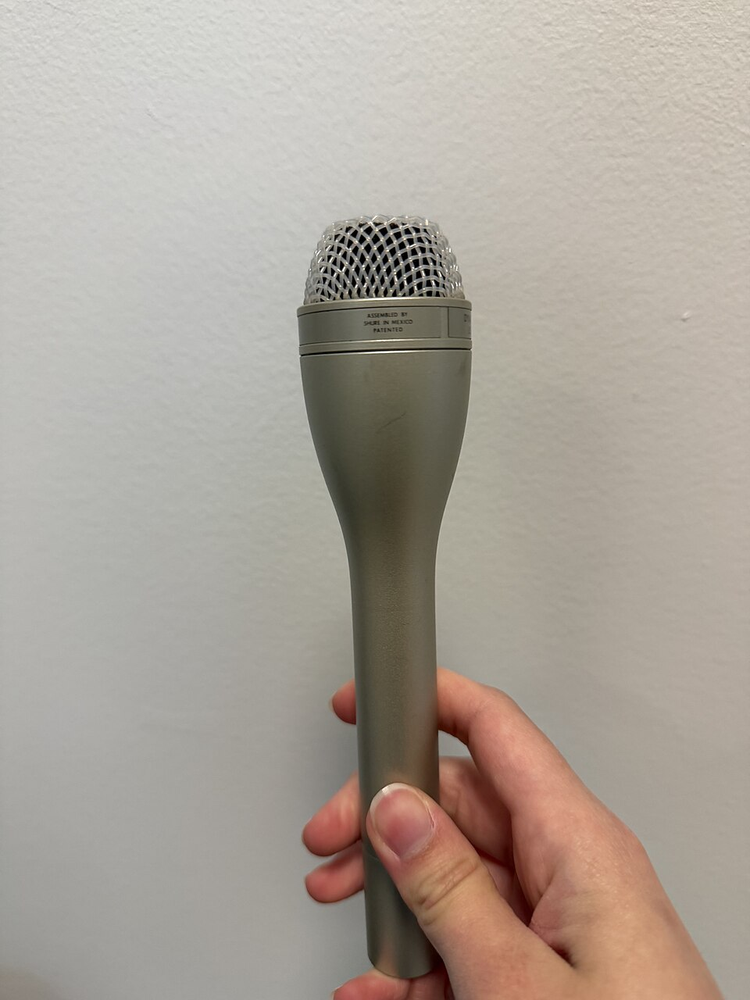
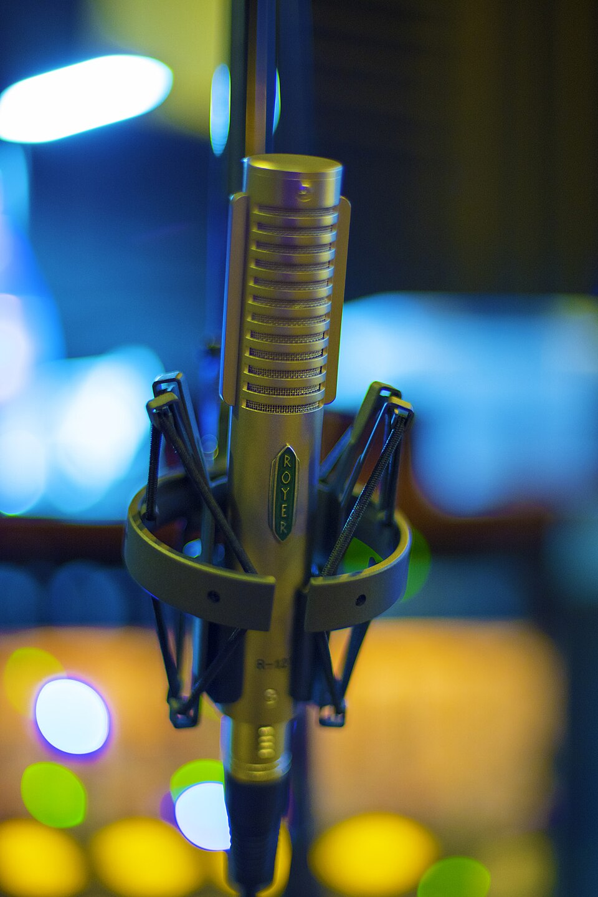
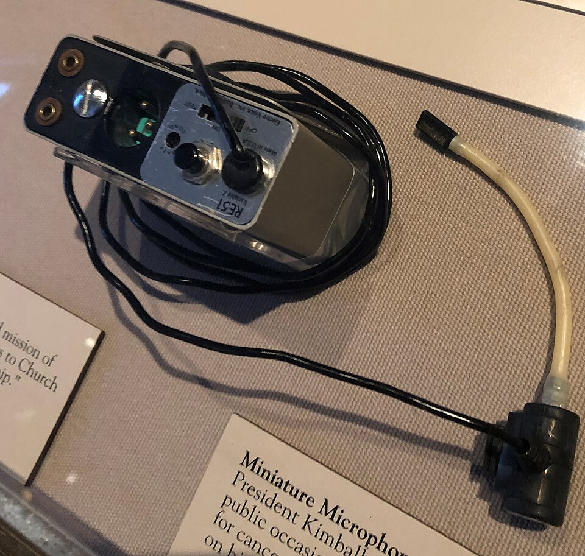
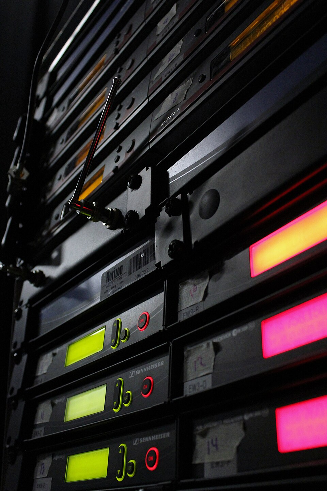

Microphone Polar Pattern Lab
A microphone does not simply “hear.” It measures pressure from particular directions. Move a performer, monitor, and noise source around four common microphones and build placements that capture the wanted sound while rejecting everything else.
1. Map the microphone’s hearing
2. See the microphones behind the patterns
A polar pattern is a directional behavior—not a body style. Two microphones can look alike and respond very differently, and some studio microphones can switch patterns. These are real, representative examples; confirm any microphone’s pattern from its label or specification sheet.

Cardioid
Studio exampleSide-address condenser: many fixed-pattern studio condensers use cardioid pickup. Speak toward the marked front—not into the top—and always verify the pattern on the mic or spec sheet.
Author-released public domain · Wikimedia Commons ↗
Omnidirectional
Pressure micShure SM61: an omni responds to pressure at one side of its diaphragm. It has no intentional rear null and does not exhibit directional proximity effect.
CC0 public-domain dedication · Wikimedia Commons ↗
Figure-eight
Ribbon exampleRoyer R-121: sound reaches both faces of its ribbon. Front and rear are sensitive with opposite polarity, while equal side pressure produces deep 90° nulls.
CC0 public-domain dedication · Wikimedia Commons ↗Shotgun / lobar
Interference tubeBoom-mounted shotgun: slots along its long tube delay off-axis sound so portions cancel before reaching the capsule. Directionality varies with frequency.
U.S. State Department public domain · Wikimedia Commons ↗3. Headset microphones and wireless receivers
Wireless does not remove the signal chain—it replaces one cable with a radio link. The microphone still creates an audio signal, the transmitter sends it by radio frequency (RF), and the receiver converts it back to audio for the mixer.

Headset + bodypack
Performer endThe capsule stays a consistent distance from the mouth while the bodypack supplies power, accepts the mic signal, and transmits it on an assigned RF channel.
CC0 public-domain dedication · Wikimedia Commons ↗
Wireless receivers
Console endEach receiver listens for its paired transmitter, displays RF and audio status, then sends audio through XLR or ¼-inch output to one mixer channel.
CC0 public-domain dedication · Wikimedia Commons ↗Follow the signal—not just the equipment
Place the headset
- Position the capsule beside the corner of the mouth—about 2–3 cm away—not directly in the breath stream.
- Use a foam windscreen and secure the cable without pulling it tight across the skin.
- Most theatre headsets are omni for consistent tone; directional models can improve gain before feedback but are more placement-sensitive.
Build a reliable RF link
- Match the transmitter and receiver to the same compatible frequency; give every active system its own coordinated channel.
- Keep receiver antennas in clear line of sight and away from metal racks, network gear, and LED power supplies when possible.
- Set bodypack input gain for the performer’s loudest voice without clipping, then set the receiver output for a healthy mixer signal.
4. Production placement challenge
5. Explain your engineering choice
- Name the pattern and describe where its strongest rejection occurs.
- Identify the wanted source, the loudest unwanted source, and the path between them.
- Predict what happens if the performer doubles their distance from the microphone.
- Sketch a safe monitor position and justify it using the polar plot—not “because it sounds better.”